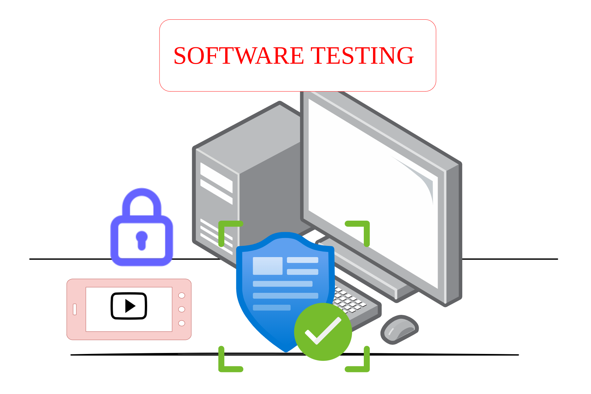

Conceitos Fundamentais de Teste de Software
Todo engenheiro de software precisa compreender os princípios básicos do teste de software. O Capítulo 1 do livro "Introdução ao Teste de Software", de Márcio Delamaro, José Maldonado e Mario Jino, apresenta os conceitos essenciais dessa prática fundamental para a qualidade de sistemas.
Por que testar?
Mesmo com boas práticas de desenvolvimento, falhas humanas acontecem. Técnicas de Validação, Verificação e Teste (VV&T) ajudam a garantir que o software entregue esteja de acordo com o esperado. O teste de software, em especial, foca na execução do programa com o objetivo de encontrar defeitos.
Tipos de atividade de teste
As atividades de teste são classificadas em:
- Teste de unidade: foca em funções ou métodos isolados.
- Teste de integração: verifica a interação entre componentes.
- Teste de sistema: avalia o comportamento geral do software.
- Teste de regressão: garante que mudanças não gerem novos problemas.
Conceitos importantes
Alguns termos são essenciais para entender os testes:
- Engano: erro humano.
- Defeito: falha no código.
- Erro: estado incorreto durante a execução.
- Falha: comportamento inesperado do sistema.
Critérios e técnicas de teste
Como testar tudo é impossível, usa-se subconjuntos representativos do domínio de entrada. As principais abordagens são:
- Teste aleatório
- Teste baseado em subdomínios (foco do livro)
Os critérios de teste ajudam a definir subdomínios e podem ser funcionais, estruturais ou baseados em erros.
“Testar não garante que o programa está certo, mas aumenta nossa confiança de que ele funciona como esperado.”
Mesmo com limitações teóricas, o teste é uma das ferramentas mais eficazes para elevar a qualidade do software.
Conteúdo baseado no Capítulo 1 de “Introdução ao Teste de Software”
Autores: Márcio Delamaro, José Maldonado e Mario Jino.